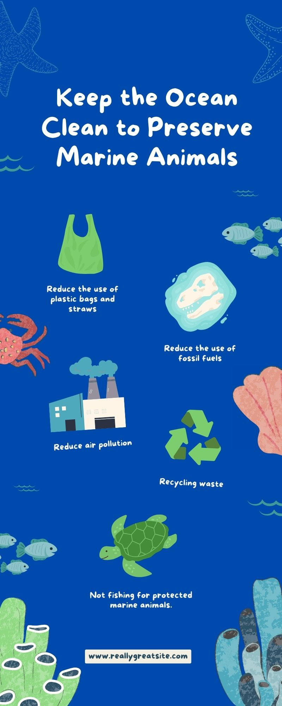

Save the Ocean!
Join the wave against microplastics! From the rugged shores to bustling city streets, every journey of a plastic bottle or a synthetic fiber tells a story. Let's rewrite the narrative by choosing eco-friendly alternatives and protecting our oceans from the silent invasion of microplastics. Together, we can make a splash for a cleaner, healthier planet!